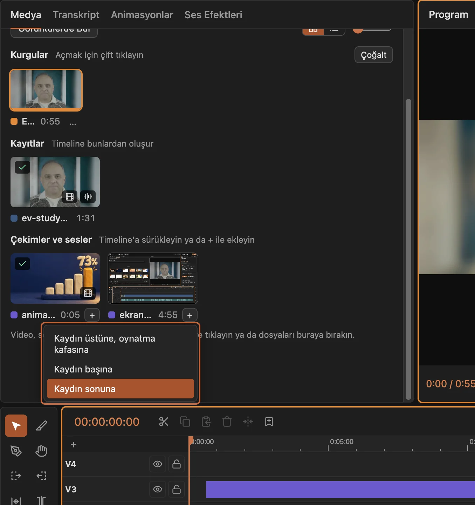
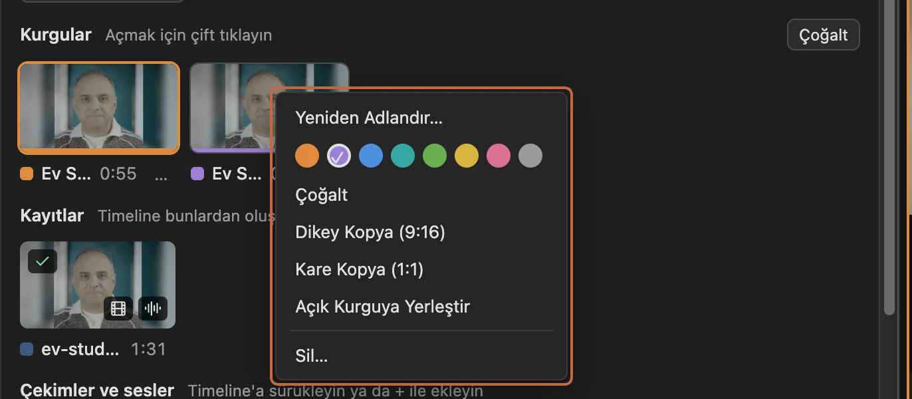

Medya
Medya sekmesi projenin kullandığı her şeyi tutar: kayıtlarını, eklediğin çekimleri ve sesleri, bir de projenin kurgularını.

Kayıtlar, çekimler ve sesler
- Kayıtlar: Timeline bunlardan oluşur. Bıraktığın ilk video ya da ses projenin kaydı olur; transkript ve otomatik kesim onun üzerinde çalışır.
- Çekimler ve sesler: kaydın üstüne ya da yanına koyacağın ek görüntüler, resimler, müzik ve sesler. Birini Timeline'a sürükle ya da + ile ekle.
Dosya eklemek için Dosya Ekle'ye bas, dosyaları sekmeye bırak ya da sekmede boş bir yere tıkla. Video, ses ve resim, hepsi girer.
Timeline'a ekle
Bir çekimin altındaki +, Timeline'a Ekle menüsünü açar:
- Kaydın üstüne, oynatma kafasına
- Kaydın başına ya da Kaydın sonuna
- bir ses için: Oynatma kafasına, A2 izine
Bir dosyaya sağ tıklarsan Bu Dosyayla Yeni Proje Aç ve Sil çıkar. Kayıt Yap ve Görüntülerde Bul sekmenin üstünde (Ekranı ve kamerayı kaydet, Görüntülerde bul).
Ayrı bir mikrofon
Sesini ayrıca kaydettiysen (yaka mikrofonu, ses kaydedici), o sese sağ tıkla ve Kayıtla Eşleştir (Mikrofon Olarak)'ı seç. Kayda sesinden eşlenir ve kameranın sesinin yerine geçer. Ses sekmesinden geri dönebilirsin.
Kurgular
Kurgular projenin Timeline'larını listeler. Açmak için birine çift tıkla. Yanındaki … bir menü açar: Çoğalt, Dikey Kopya (9:16), Kare Kopya (1:1), Açık Kurguya Yerleştir, Yeniden Adlandır…, bir renk ve Sil…. Bir projede en az bir kurgu kalır. Fazlası: Kurgular.

Görünüm
Görünüm, Küçük resimler (küçük, orta ya da büyük) ile sütunlu bir Liste arasında geçer: renk etiketi, tür, ad, süre, biçim ve Timeline'da olanları işaretleyen Kullanımda.